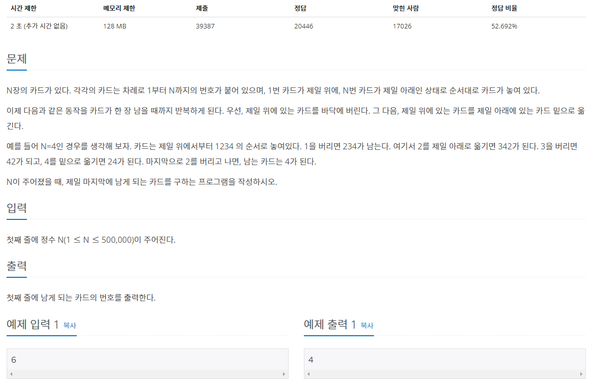
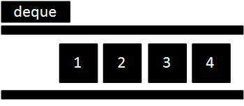
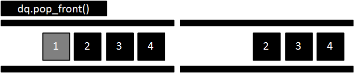
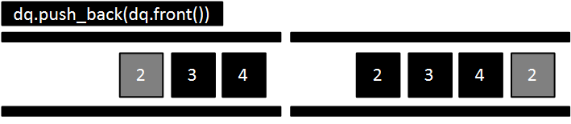
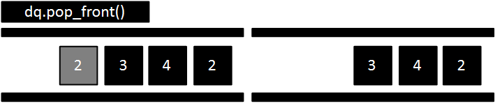
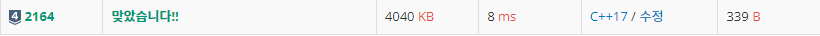

#INFO
난이도 : SILVER4
알고리즘 유형 : DataStructure_DEQUE
2164번: 카드2
N장의 카드가 있다. 각각의 카드는 차례로 1부터 N까지의 번호가 붙어 있으며, 1번 카드가 제일 위에, N번 카드가 제일 아래인 상태로 순서대로 카드가 놓여 있다. 이제 다음과 같은 동작을 카드가
www.acmicpc.net

#SOLVE
양쪽이 모두 뚫려있는 STL DEQUE를 이용하면 쉽게 풀이 가능합니다.
우선, deque를 하나 선언해 준 뒤, deque에 n까지의 수를 push_back해 줍니다.
deque<int> q;
int n;
cin >> n;
for (int i = 1 ; i <= n; i++) {
q.push_back(i);
}
다음으로 아래 과정을 deque의 size가 1이 될 때 까지 반복합니다.
1. 가장 앞에 있는 원소를 pop()한다.

2. 가장 앞에 있는 원소를 push_back() 한다.

3. 가장 앞에 있는 원소를 pop() 한다.

while(q.size() > 1) {
q.pop_front();
if(q.size() == 1) break;
q.push_back(q.front());
q.pop_front();
}
이제 마지막으로 남은 원소를 출력해 주면 됩니다.
cout << q.front() << endl;#CODE
#include <iostream>
#include <deque>
using namespace std;
int main(int argc, char* argv[]) {
deque<int> q;
int n;
cin >> n;
for (int i = 1 ; i <= n; i++) {
q.push_back(i);
}
while(q.size() > 1) {
q.pop_front();
if(q.size() == 1) break;
q.push_back(q.front());
q.pop_front();
}
cout << q.front() << endl;
return 0;
}